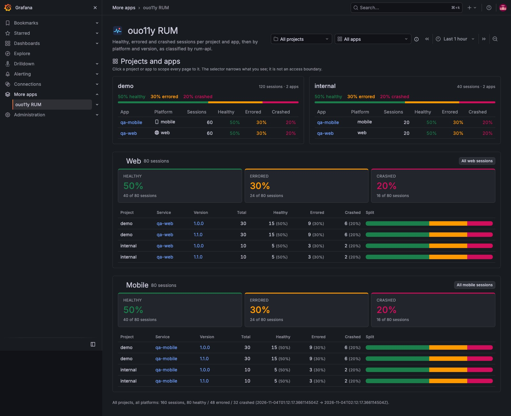
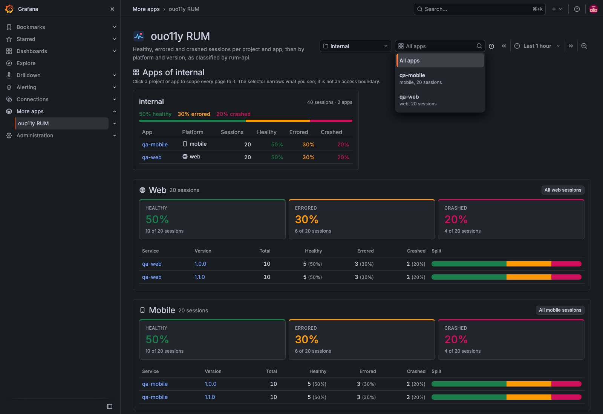
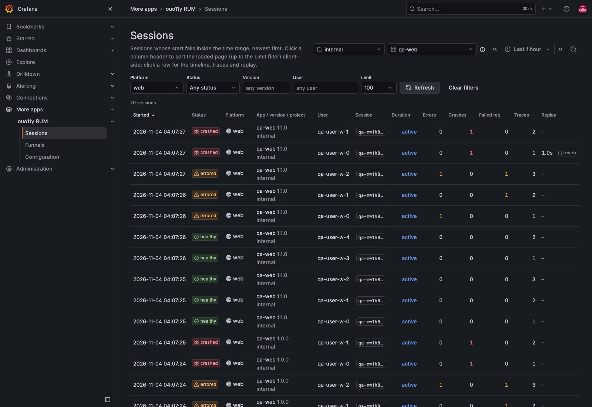
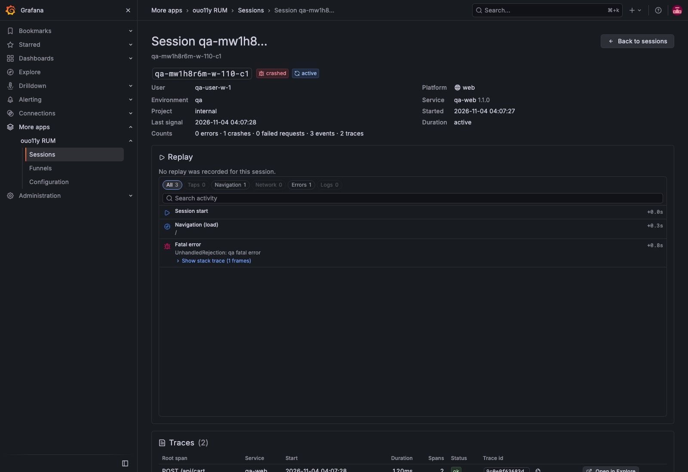

grafana-plugin and rum-api, 2026-11-04. Branch claude/r1-project-selector. Isolated compose project
r1scope (Grafana 13.2.5 on :24700, rum-api :24710, collector OTLP :24705), with rum-api, the collector and the plugin built from the branch.
Data: deploy/scripts/e2e.sh run twice, as project demo (mw1h75px) and as project internal
(mw1h8r6m). Each run is 40 synthetic sessions over the apps qa-web and qa-mobile, sent as OTLP through the collector with the
project's Basic credential, so ouo.project.id was stamped by the collector. Browser: Playwright Chromium, headless.
| Check | How | Result |
|---|---|---|
e2e scenario with the new contract (project_id on buckets and records, apps, ?project= narrows, another project returns 0, GET /v1/projects) | deploy/scripts/e2e.sh for each project | E2E OK twice, 0 mismatches |
| Overview with all projects shows one card per project side by side | Playwright: project-demo and project-internal visible, comboboxes read "All projects" / "All apps" | 2 cards |
| Picking a project scopes the page and the URL | Project combobox → internal | ?…&project=internal, "Apps of internal", demo card gone |
| The App menu lists only the picked project's apps | App combobox opened | All apps, qa-mobile, qa-web (20 sessions each) |
| Links keep the scope: Overview → Sessions → detail → back | Click "All web sessions", then a row | Sessions URL and back link carry project=internal&service=qa-web; every row reads internal |
| Every rum-api call carries the scope | Requests through /api/plugin-proxy/ouo11y-rum-app/rum/ recorded | health, sessions, session, logs all with project=internal&service=qa-web |
| A session read under another project is not found | Same detail URL with project=demo | "session not found" |
| Scope change while loading | First run of the script | Found and fixed: the previous scope's numbers showed under the new labels until the response arrived. Overview and Sessions now hide data from another scope (isOtherScope). |
| Project selector lists a session started in the last minute | e2e projects check, first run | Found and fixed: to was rounded down to the minute. It now rounds up. |


internal picked. The App menu lists only that project's apps, with platforms and session counts.

plugin.json and open with "all". Only in-app links keep the scope. plugin.json was left alone because PR #155 edits it.